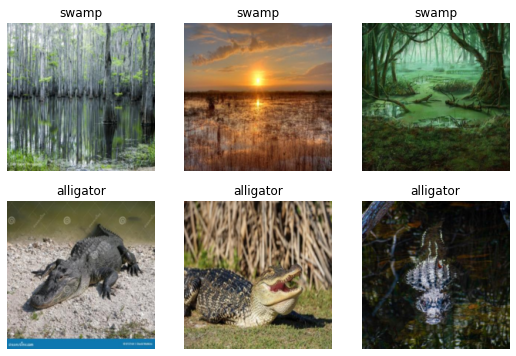

# It's a good idea to ensure you're running the latest version of any libraries you need.
# `!pip install -Uqq <libraries>` upgrades to the latest version of <libraries>
# NB: You can safely ignore any warnings or errors pip spits out about running as root or incompatibilities
!pip install -Uqq fastai duckduckgo_searchPractical Deep Learning for Coders - Part 1
Vishal Bakshi
This notebook contains my notes (of course videos, example notebooks and book chapters) and exercises of Part 1 of the course Practical Deep Learning for Coders.
Lesson 1
Notebook Exercise
The first thing I did was to run through the lesson 1 notebook from start to finish. In this notebook, they download training and validation images of birds and forests then train an image classifier with 100% accuracy in identifying images of birds.
The first exercise is for us to create our own image classifier with our own image searches. I’ll create a classifier which accurately predicts an image of an alligator.
I’ll start by using their example code for getting images using Duck Duck Go image search:
from duckduckgo_search import ddg_images
from fastcore.all import *
def search_images(term, max_images=30):
print(f"Searching for '{term}'")
return L(ddg_images(term, max_results=max_images)).itemgot('image')The search_images function takes a search term and max_images maximum number of images value. It prints out a line of text that it’s "Searching for" the term and returns an L object with the image URL.
The ddg_images function returns a list of JSON objects containing the title, image URL, thumbnail URL, height, width and source of the image.
search_object = ddg_images('alligator', max_results=1)
search_object/usr/local/lib/python3.9/dist-packages/duckduckgo_search/compat.py:60: UserWarning: ddg_images is deprecated. Use DDGS().images() generator
warnings.warn("ddg_images is deprecated. Use DDGS().images() generator")
/usr/local/lib/python3.9/dist-packages/duckduckgo_search/compat.py:64: UserWarning: parameter page is deprecated
warnings.warn("parameter page is deprecated")
/usr/local/lib/python3.9/dist-packages/duckduckgo_search/compat.py:66: UserWarning: parameter max_results is deprecated
warnings.warn("parameter max_results is deprecated")[{'title': 'The Creature Feature: 10 Fun Facts About the American Alligator | WIRED',
'image': 'https://www.wired.com/wp-content/uploads/2015/03/Gator-2.jpg',
'thumbnail': 'https://tse4.mm.bing.net/th?id=OIP.FS96VErnOXAGSWU092I_DQHaE8&pid=Api',
'url': 'https://www.wired.com/2015/03/creature-feature-10-fun-facts-american-alligator/',
'height': 3456,
'width': 5184,
'source': 'Bing'}]Wrapping this list in L object and calling .itemgot('image') on it extracts URL value associated with the image key in the JSON object.
L(search_object).itemgot('image')(#1) ['https://www.wired.com/wp-content/uploads/2015/03/Gator-2.jpg']Next, they provide some code to download the image to a destination filename and view the image:
urls = search_images('alligator', max_images=1)
from fastdownload import download_url
dest = 'alligator.jpg'
download_url(urls[0], dest, show_progress=False)
from fastai.vision.all import *
im = Image.open(dest)
im.to_thumb(256,256)Searching for 'alligator'For my not-alligator images, I’ll use images of a swamp.
download_url(search_images('swamp photos', max_images=1)[0], 'swamp.jpg', show_progress=False)
Image.open('swamp.jpg').to_thumb(256,256)Searching for 'swamp photos'/usr/local/lib/python3.9/dist-packages/duckduckgo_search/compat.py:60: UserWarning: ddg_images is deprecated. Use DDGS().images() generator
warnings.warn("ddg_images is deprecated. Use DDGS().images() generator")
/usr/local/lib/python3.9/dist-packages/duckduckgo_search/compat.py:64: UserWarning: parameter page is deprecated
warnings.warn("parameter page is deprecated")
/usr/local/lib/python3.9/dist-packages/duckduckgo_search/compat.py:66: UserWarning: parameter max_results is deprecated
warnings.warn("parameter max_results is deprecated")In the following code, I’ll search for both terms, alligator and swamp and store the images in alligator_or_not/alligator and alligator_or_not/swamp paths, respectively.
The parents=TRUE argument creates any intermediate parent directories that don’t exist (in this case, the alligator_or_not directory). The exist_ok=TRUE argument suppresses the FileExistsError and does nothing.
searches = 'swamp','alligator'
path = Path('alligator_or_not')
from time import sleep
for o in searches:
dest = (path/o)
dest.mkdir(exist_ok=True, parents=True)
download_images(dest, urls=search_images(f'{o} photo'))
sleep(10) # Pause between searches to avoid over-loading server
download_images(dest, urls=search_images(f'{o} sun photo'))
sleep(10)
download_images(dest, urls=search_images(f'{o} shade photo'))
sleep(10)
resize_images(path/o, max_size=400, dest=path/o)Searching for 'swamp photo'
Searching for 'swamp sun photo'
Searching for 'swamp shade photo'
Searching for 'alligator photo'
Searching for 'alligator sun photo'
Searching for 'alligator shade photo'Next, I’ll train my model using the code they have provided.
The get_image_files function is a fastai function which takes a Path object and returns an L object with paths to the image files.
type(get_image_files(path))fastcore.foundation.Lget_image_files(path)(#349) [Path('alligator_or_not/swamp/1b3c3a61-0f7f-4dc2-a704-38202d593207.jpg'),Path('alligator_or_not/swamp/9c9141f2-024c-4e26-b343-c1ca1672fde8.jpeg'),Path('alligator_or_not/swamp/1340dd85-5d98-428e-a861-d522c786c3d7.jpg'),Path('alligator_or_not/swamp/2d3f91dc-cc5f-499b-bec6-7fa0e938fb13.jpg'),Path('alligator_or_not/swamp/84afd585-ce46-4016-9a09-bd861a5615db.jpg'),Path('alligator_or_not/swamp/6222f0b6-1f5f-43ec-b561-8e5763a91c61.jpg'),Path('alligator_or_not/swamp/a71c8dcb-7bbb-4dba-8ae6-8a780d5c27c6.jpg'),Path('alligator_or_not/swamp/bbd1a832-a901-4e8f-8724-feac35fa8dcb.jpg'),Path('alligator_or_not/swamp/45b358b3-1a12-41d4-8972-8fa98b2baa52.jpg'),Path('alligator_or_not/swamp/cf664509-8eb6-42c8-9177-c17f48bc026b.jpg')...]The fastai parent_label function takes a Path object and returns a string of the file’s parent folder name.
parent_label(Path('alligator_or_not/swamp/18b55d4f-3d3b-4013-822b-724489a23f01.jpg'))'swamp'Some image files that are downloaded may be corrupted, so they have provided a verify_images function to find images that can’t be opened. Those images are then removed (unlinked) from the path.
failed = verify_images(get_image_files(path))
failed.map(Path.unlink)
len(failed)1failed(#1) [Path('alligator_or_not/alligator/1eb55508-274b-4e23-a6ae-dbbf1943a9d1.jpg')]dls = DataBlock(
blocks=(ImageBlock, CategoryBlock),
get_items=get_image_files,
splitter=RandomSplitter(valid_pct=0.2, seed=42),
get_y=parent_label,
item_tfms=[Resize(192, method='squish')]
).dataloaders(path, bs=32)
dls.show_batch(max_n=6)
I’ll train the model using their code which uses the resnet18 image classification model, and fine_tunes it for 3 epochs.
learn = vision_learner(dls, resnet18, metrics=error_rate)
learn.fine_tune(3)/usr/local/lib/python3.9/dist-packages/torchvision/models/_utils.py:208: UserWarning: The parameter 'pretrained' is deprecated since 0.13 and will be removed in 0.15, please use 'weights' instead.
warnings.warn(
/usr/local/lib/python3.9/dist-packages/torchvision/models/_utils.py:223: UserWarning: Arguments other than a weight enum or `None` for 'weights' are deprecated since 0.13 and will be removed in 0.15. The current behavior is equivalent to passing `weights=ResNet18_Weights.IMAGENET1K_V1`. You can also use `weights=ResNet18_Weights.DEFAULT` to get the most up-to-date weights.
warnings.warn(msg)
Downloading: "https://download.pytorch.org/models/resnet18-f37072fd.pth" to /root/.cache/torch/hub/checkpoints/resnet18-f37072fd.pth| epoch | train_loss | valid_loss | error_rate | time |
|---|---|---|---|---|
| 0 | 0.690250 | 0.171598 | 0.043478 | 00:03 |
| epoch | train_loss | valid_loss | error_rate | time |
|---|---|---|---|---|
| 0 | 0.127188 | 0.001747 | 0.000000 | 00:02 |
| 1 | 0.067970 | 0.006409 | 0.000000 | 00:02 |
| 2 | 0.056453 | 0.004981 | 0.000000 | 00:02 |
The accuracy is 100%.
Next, I’ll test the model as they’ve done in the lesson.
PILImage.create('alligator.jpg').to_thumb(256,256)
is_alligator,_,probs = learn.predict(PILImage.create('alligator.jpg'))
print(f"This is an: {is_alligator}.")
print(f"Probability it's an alligator: {probs[0]:.4f}")This is an: alligator.
Probability it's an alligator: 1.0000Video Notes
In this section, I’ll take notes while I watch the lesson 1 video.
Book Notes
In this section, I’ll take notes while I read Chapter 1 in the textbook.